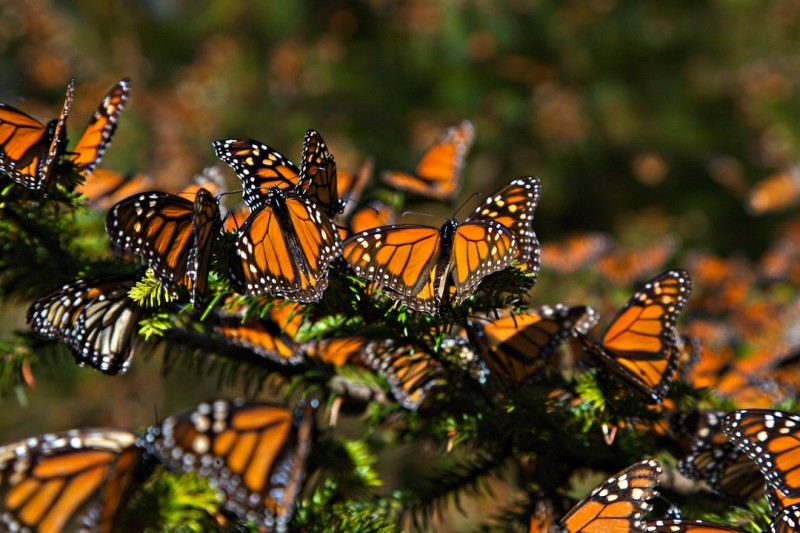
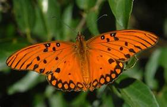

1. Mariposa Monarca
(Danaus plexippus) |
Caracteristicas
- Las mariposas más conocidas por sus colores naranja y negro.
|
Distribución
Habita en América del Norte, aunque realiza una migración masiva hacia México durante el invierno.
|
Alimentación
Se alimenta principalmente del néctar de flores y en su fase de oruga de plantas como el algodoncillo (Asclepias).
|

|
| 2. Mariposa Morpho Azul (Morpho menelaus) |
Caracteristicas
- Destaca por el intenso color azul metálico de sus alas,
que en realidad es un efecto de la luz (iridiscencia)
| Distribución
Se encuentra en selvas tropicales de
América Central y del Sur.
|
Alimentación
Se alimenta del jugo de frutas fermentadas y de savia de árboles.
|

|
|
| 3. Mariposa Espejitos (Greta oto) |
Caracteristicas
- Conocida como "mariposa de cristal" por sus alas transparentes,
que le permiten camuflarse fácilmente.
Distribución
Vive en América Central, desde México hasta Panamá.
|
Alimentación
Se nutre de néctar de varias flores, en especial de plantas de la familia Solanaceae.
|

|